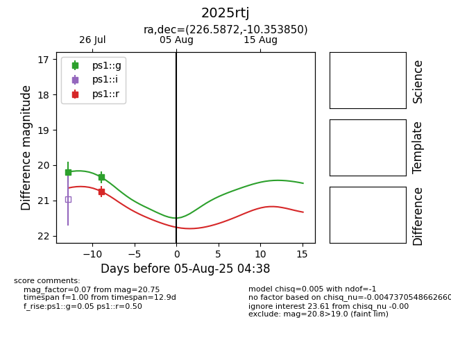

Target 2025rtj at 2025-08-05 04:38, see:
YSE: ziggy.ucolick.org/yse/transient_detail/2025rtj
alt names
2025rtj (yse)
coordinates:
equatorial (ra, dec) = (226.5872,-10.35385)
galactic (l, b) = (348.6322,+40.25454)
photometry
last ps1::g=20.34, ps1::r=20.75
2 ps1::g, 1 ps1::r detections
